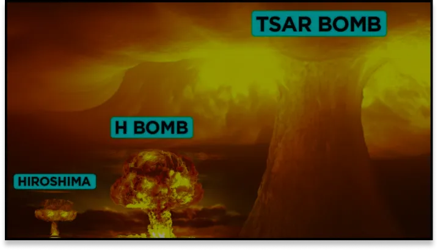

La menace technologique
La plus grosse arme à destruction
massive jamais créée.
L’avancement technologique de trop.
Dans le désert du Mexique le 16 juillet 1945 de nuit les États-Unis réalisent une première expérience.
Mais c’est le 6 aout 1945 à 8 heures et 16 minutes, à Hiroshima au Japon, que la première bombe atomique de l’histoire explose. L’explosion balaye alors sur 12 kilomètres, tout ce qui existe.
70 000 personnes sont tuées sur le coup. Une vague de chaleur ainsi que des incendies se déchainent sur la ville.
Des dizaines de milliers sont grièvement brûlées et mourront des suites de leurs blessures.
Puis 3 jours plus tard, le 9 aout à Nagasaki.
La même tragédie se reproduit.
Durant le siècle tous les pays se mettent à la course nucléaire.
En 1954 les Américains créent “Castle Bravo”, une bombe plus puissante que les précédentes.
Mais la bombe n’était pas transportable, alors les recherches ont continué.
En octobre 1961, explose la “Tsar Bomba”, de l’armée Russe. L’explosion crée une boule de feu de la taille du Mont Everest.
Elle projette une onde de choc qui fera 3 fois le tour du monde. La bombe de 57 mégatonnes est transportable en avion. Elle est 3 mille fois plus puissante que celle d'Hiroshima.
À partir de 100 mégatonnes, l’explosion utilise déjà toute l’épaisseur atmosphérique terrestre. Le reste de l’explosion partirait dans l’espace.
C’est comme ça que les bombes nucléaires devinrent d'effrayants arguments de menaces politiques.
Comparaison des bombes nucléaires
L’IEM, une effrayante technologie.
L’IEM, plus connu sous le nom d’impulsion électromagnétique. En 1960 que les chercheurs se penchent dessus.
Cette impulsion est si forte qu’elle détruit tous les appareils électriques qu'elle touche.
C’est une explosion de rayonnement gamma, qui sature l’air de plus 50 000 volts par mètre, comme la foudre.

Johannesburg frappé par la foudre
L’IEM, une effrayante technologie.
Le survoltage, grille tous les composants électriques.
Chez les humains il y a une faible probabilité de dommages, mais les risques existent.
Les effets seraient une perte de conscience temporaire, ou la mort.
Si une IEM explosait au-dessus d’une ville, les conséquences seraient considérables.
Les hôpitaux serait hors-service, ainsi que les stations de traitement d’eau.
Une impossibilité de joindre les secours, une distribution de nourriture difficile.
En somme, les villes seraient tout d’un coup privées de leur vie.
Les pays gardent le secret sur cette technique.
Une IEM dispose de la même portée qu’une bombe nucléaire.
Ces bombes pourront un jour mettre hors-service tout un pays.
Citation :
Connais l’adversaire et surtout connais toi toi-même et tu seras invincible.
Sun Tzu
C’est le surdéveloppement des armes de guerre.
Une grande partie des guerres se basent sur de l’information.
Son idée est de gagner la guerre grâce à la psychologie.
Mais il y a surtout beaucoup de guerres qui se mènent avec internet et l’informatique.
D'où l'intérêt de posséder une IEM, cette arme pourrait être décisive lors d’une guerre.
Les hommes possèdent déjà des chars, des armes à feu, des véhicules aériens.
Et tout un tas d’autres moyens de livrées une guerre.
Mais le développement de ces armes ne s'arrêtera jamais.
L’homme étant un être assoiffé de pouvoir et continue de développer plus puissant.

Découvrir :
l'article lié